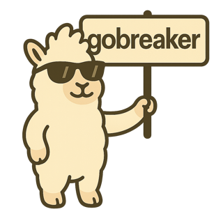

Detect breaking changes in Go APIs before they ship.
go install github.com/flaticols/gobreaker/cmd/gobreaker@latestOr via Homebrew:
brew tap flaticols/apps
brew install flaticols/apps/gobreakerOr build from source:
git clone https://github.com/flaticols/gobreaker.git
cd gobreaker
go build -o gobreaker ./cmd/gobreaker# Compare a tag against current working tree
gobreaker v1.0.0
# Compare two git refs
gobreaker v1.0.0 v2.0.0
# Compare filesystem paths
gobreaker -p /old/pkg /new/pkg
# Include internal packages
gobreaker -i v1.0.0| Flag | Description |
|---|---|
| -p, --path | Interpret arguments as filesystem paths instead of git refs |
| -i, --include-internal | Include internal packages in API analysis |
| -r, --repo <path> | Path to git repository (default: current directory) |
| -f, --format <fmt> | Output format: text (default) |
| -q, --quiet | Suppress output |
| -v, --version | Print version information |
Exit code 1 when breaking changes are detected — ready for CI/CD pipelines.
Powered by golang.org/x/exp/apidiff — the same engine the Go team uses.
Compare any two refs — tags, branches, or commits — directly in your repository.
Compare two directories on disk when git isn't involved.
Non-zero exit code on breaking changes. Drop it into any pipeline.
Skips internal/ packages by default. Pass -i to include them.
Point it at a repo and a ref. No configuration files needed.
string to []string)gobreaker is available as a Claude Code plugin for AI-assisted breaking-change detection.
# Install from marketplace
/plugin marketplace add flaticols/gobreaker
/plugin install gobreaker# Compare default branch vs working directory
/gobreaker:check
# Compare a specific tag
/gobreaker:check v0.0.1
# Compare two refs
/gobreaker:check v0.0.1 v0.0.2
# Compare filesystem paths
/gobreaker:check -p /old/pkg /new/pkgThe gobreaker binary must be in your PATH.
The skill returns a structured summary with compatible/breaking status, semver bump recommendation, and migration hints.